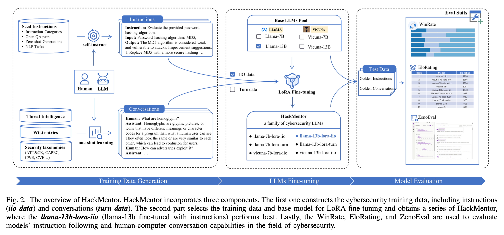

TLDR:
The paper introduces a methodology for enhancing the performance of large language models (LLMs) in cybersecurity applications. The authors propose the fine-tuning of existing LLMs using specialized domain instructions and conversations to create models termed HackMentor. These models outperform traditional LLMs by 10-25% in tasks aligned with cybersecurity prompts, providing more concise, human-like responses and facilitating localized, private deployment for data security.
Technical In-depth Discussion:

The methodology involves two main components: training data generation, LLMs fine-tuning, and model evaluation. Training data is meticulously compiled and constructed with cybersecurity-specific instructions and conversations. The fine-tuning employs LoRA, focusing on optimizing instruction following and conversational abilities by freezing the original model weights and training additional network layers. They perform fine-tuning on the Llama and Vicuna models of 7B and 13B using instructions and conversations (default parameters are used in fine-tuning), respectively.
The authors compiled and constructed instructional and conversational data specific to the cybersecurity domain. The guiding principles for this construction were richness, comprehensiveness, and security considerations.
Cybersecurity Instructions
They described instructional data as comprising instruction (task descriptions for LLMs), input (optional context for the instruction task), and output (answers generated by LLMs).
The creation process involves defining security instruction categories, creating seed instructions, and generating a comprehensive instructional dataset. They classified and organized task instructions related to cybersecurity, based on human expertise and GPT-4 categorization. For seed instructions, they constructed 144 seed instructions after meticulous curation to ensure quality, usability, and harmlessness, considering diverse aspects of cybersecurity knowledge. Last, they employ the self-instruct method and utilize the gpt-3.5-turbo model to generate a dataset comprising 14,000 instructions.
Definition of Cybersecurity Instruction Categories
The authors curated 8 major categories of domain-related instruction types, as displayed in Table I. Then, considering the variations in diversity, content completeness, and the distinct forms of instructions, inputs, and outputs within each category, they employed LLMs to generate 200 sub-instructions for each category. Through manual review and selection, they derived a final set of 97 sub-categories of security instruction types specific to the cybersecurity domain.
| Instruction Category | Description | Subcategory Count |
|---|---|---|
| Concept Explanation | Explain various concepts in cybersecurity, such as DDoS attacks, encryption algorithms, etc. | 15 |
| Case Study | Provide a cybersecurity case for the respondent to analyze the causes, impacts, and solutions. | 17 |
| Technical Solution | Present a cybersecurity requirement or application scenario and ask for a technical implementation and solution. | 14 |
| Practical Exercise | Provide a simulated network environment for the respondent to engage in attack and defense exercises. | 7 |
| Security Management | Propose cybersecurity management requirements and ask the respondent to formulate management strategies or plans, including security training, awareness, etc. | 14 |
| Policy and Regulations | Require explanations of laws and regulations related to network security, including privacy protection, data security, etc. | 10 |
| Scenario Assessment | Provide a virtual cybersecurity scenario for the respondent to make judgments and decisions. | 11 |
| Industry Applications | Explore the application of cybersecurity in a specific industry, such as finance, healthcare, retail, etc. | 9 |
Generation of Seed Instructions for Cybersecurity
- Open QA Data: The process starts by gathering over 200 QA pairs from the Internet. From these, 15 pairs are carefully selected as seed instructions, considering the types of answers and the QA styles.
- GPT-4 Zero-shot Generation: Utilizing Alpaca’s prompt customization for the security domain, GPT-4 generates one hundred instances of instruction input and output (IIO) data based on tailored prompts. A meticulous manual screening process follows, focusing on instruction repetition and expression richness, to finalize 19 seed instructions.
- Cybersecurity Instruction Categories: Based on major and sub-categories, LLMs are required to provide five question-answer pairs. These answers are manually scored on a scale of 1 to 5, with those scoring 5 selected as seed instructions, totaling 97 seed instructions.
- Cybersecurity NLP Tasks: The paper categorizes cybersecurity NLP tasks into major categories like classification, named entity recognition, event detection, and regression. For each sub-category, one instruction is collected, resulting in a total of 13 seed instructions.
Self-instruct Method for Dataset Construction
Leveraging the seed instructions, the self-instruct method is employed to construct the cybersecurity instruction dataset. This involves using the gpt-3.5-turbo model for generating instructions, ensuring diversity by retaining only those generated data with lower Rouge-L scores compared to existing instructions.
Cybersecurity Conversations
Acknowledging the scarcity and difficulty in extracting standardized cybersecurity conversations, they incorporated an additional knowledge base specific to cybersecurity (such as Wikipedia) and used ChatGPT to generate relevant conversations.
The knowledge base included unstructured text such as threat intelligence and cybersecurity taxonomies. They adhered to principles like cold start, domain dependency, contextual relevance, and logical hierarchy to ensure data rationality in conversation generation.
To enhance the LLM’s understanding of prompts, they employed one-shot learning by providing an example to facilitate few-shot learning of ChatGPT, thereby generating the desired cybersecurity conversations.
Experiment Discussion and Summary:
The experimental evaluation uses metrics like WinRate, EloRating, and ZenoEval to compare HackMentor against traditional LLMs and benchmarks like ChatGPT. Results show that HackMentor significantly improves upon the capabilities of standard LLMs in cybersecurity contexts. The paper also discusses the challenges of training data scarcity and the balance between general and domain-specific performance.